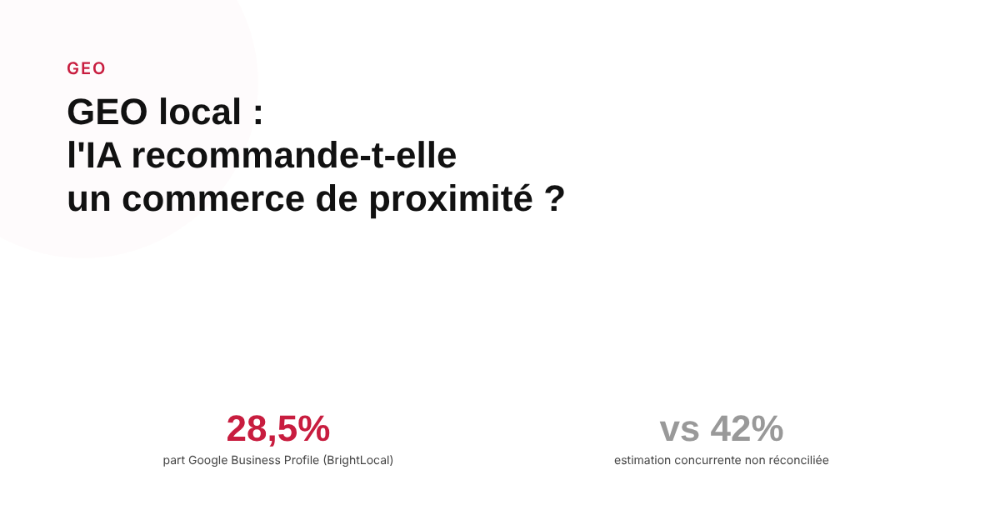
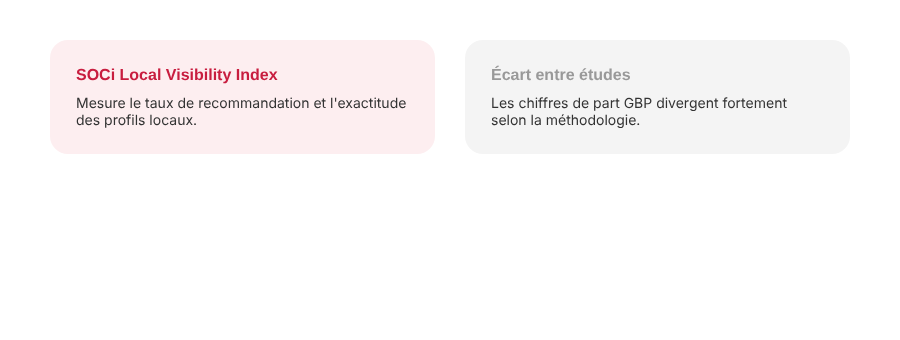

GEO local : les IA génératives recommandent-elles vraiment des commerces de proximité ?
Un artisan ou un commerce de quartier se demande légitimement si ChatGPT ou Perplexity vont un jour le recommander comme le fait Google avec son 3-pack local. Les études 2026 disponibles donnent une réponse claire sur la tendance, même si leurs chiffres précis restent à prendre avec précaution.

Un restaurateur ou un plombier qui investit dans sa fiche Google Business Profile se demande de plus en plus si ce travail compte aussi pour ChatGPT ou Perplexity. La question est légitime : plusieurs études publiées en 2026 s'y sont penchées directement, et leurs conclusions, bien qu'issues d'analyses d'éditeurs plutôt que de recherche académique, dessinent un tableau cohérent sur la tendance de fond.
Un écart net entre Google et les IA génératives
L'indice de visibilité locale 2026 publié par SOCi rapporte que les plateformes IA ne recommandent qu'une faible part des établissements qu'elles pourraient citer : environ 1,2 % sur ChatGPT et 7,4 % sur Perplexity, contre 35,9 % de taux de visibilité dans le 3-pack local de Google pour les mêmes types de recherches. L'écart est large, et cohérent avec l'idée que les moteurs conversationnels généralistes n'ont pas encore atteint la maturité du système de recherche locale de Google, construit depuis des années autour de Maps et des avis.
La qualité des données reste un problème distinct
Au-delà du taux de recommandation, un deuxième problème apparaît dans ces mêmes études : l'exactitude des informations reprises. Le même indice SOCi 2026 situe la précision des profils d'établissements repris par les IA à environ 68 % sur ChatGPT et Perplexity, contre une précision nettement meilleure sur Gemini — un résultat cohérent avec le fait que Gemini puise directement dans les données de Google Maps, alors que ChatGPT et Perplexity recomposent l'information à partir de sources plus hétérogènes.

D'où viennent les sources citées par les IA pour le local
Les études disponibles divergent nettement sur la part exacte que représente Google Business Profile dans les citations locales des IA — une estimation de BrightLocal pour 2026 l'évalue à 28,5 %, tandis qu'une autre analyse, moins rigoureuse sur sa méthode, avance plutôt 42 % pour Google Business Profile, 28 % pour les annuaires et 17 % pour le site propre de l'entreprise. Ces deux estimations ne se recoupent pas vraiment, ce qui invite à retenir le principe plutôt que le chiffre : Google Business Profile reste une source significative, sans être la seule, et Perplexity en particulier s'appuie aussi beaucoup sur des contenus tiers comme Reddit ou les plateformes d'avis.
Ce que ça change concrètement pour une PME locale
Les études convergent sur un point pratique : un profil Google Business complet, exact et à jour reste la base incontournable, même s'il ne garantit rien seul. Un test réalisé sur des recherches de dentistes et de plombiers a observé que l'ordre des recommandations suivait d'assez près les notes et le volume d'avis des établissements — un signal cohérent avec l'intuition, même s'il s'agit d'un échantillon limité et non d'une démonstration statistique solide. Pour une PME locale, l'enseignement raisonnable est de continuer à soigner sa fiche, ses avis et sa présence sur les plateformes tierces pertinentes pour son secteur, sans attendre des IA génératives le même niveau de visibilité que Google aujourd'hui.
FAQ
ChatGPT et Perplexity recommandent-ils des commerces locaux aussi souvent que Google ?
Non, selon plusieurs études 2026. Un indice de visibilité locale publié par SOCi en 2026 situe le taux de recommandation effective des établissements à 1,2 % sur ChatGPT et 7,4 % sur Perplexity, contre 35,9 % de visibilité dans le 3-pack local de Google — des ordres de grandeur très différents, même si les méthodologies de ces études restent des analyses d'éditeurs, pas des publications académiques.
Un Google Business Profile complet garantit-il d'être recommandé par les IA ?
Non. Les études disponibles s'accordent sur le fait qu'un profil complet et exact est une condition nécessaire mais pas suffisante. Plusieurs sources notent aussi que l'exactitude des informations d'un établissement reprise par les IA reste imparfaite, autour de 68 % selon l'indice SOCi 2026 pour ChatGPT et Perplexity.
Les avis clients comptent-ils dans les recommandations locales par IA ?
Les analyses disponibles pointent dans ce sens sans le démontrer de façon rigoureuse : un test portant sur des recherches de dentistes et de plombiers a observé que l'ordre des recommandations suivait d'assez près les notes et le nombre d'avis des établissements, mais il s'agit d'un échantillon limité, pas d'une preuve statistique généralisable.
Envie d'un diagnostic de votre visibilité locale, Google comme IA génératives ?
Pour aller plus loin, voir la page GEO, et l'article Google Business Profile : le levier local que les PME sous-exploitent.
Pour continuer sur ce sujet.